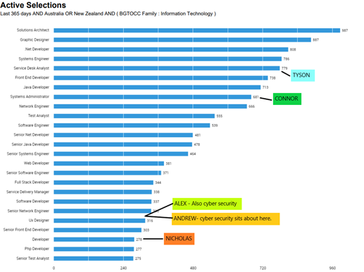

Industry Data
What are the Job Titles for your group's ideal jobs? How do each of these rank in terms of demand from employers?
Andrew
Cyber Security Analyst
The burning glass data does not show postings for cyber security analyst but a quick search on Seek provided 316 jobs advertised currently.
Based on this data this job is mid-tier demand in comparison to the burning glass data.
IT skills: SQL, Java, Microsoft Windows, Python, Tech Support
Generic Skills: communication, problem solving, troubleshooting, organisational and management skills.
Nicholas
Gaming and Application Development
This role is comparable to the developer role on the burning glass data, which shows 278 roles advertised. Because this role is in high demand,
but the actual job offerings are quite low, this could be seen as one of the rarer jobs to attain. A quick Seek search confirms this assumption,
showing only 315 jobs in gaming development.
IT skills: High Level Coding (C+, Java, Python. HTML), graphic design, project management, Windows, and Linux knowledge.
Generic Skills: Communication, team collaboration, problem solving, planning, creativity.
Tyson
Application Support Officer
This role ranks quite high due to the volume of workplaces that require a support officer for application or hardware support.
Regarding the burning glass data, Tyson was ranked under the service desk analyst role, as this is closely related to applications
support officer. A quick search on Seek provided 1500 job availabilities, which further confirms the accuracy of the burning glass data.
IT skills: Microsoft Windows, Technical Support, Customer Support, Basic Coding (python/java) and Git
Generic Skills: communication, problem solving, troubleshooting and organisational skills.
Connor
Systems Analyst
Like application support, this role can be broken into many sub-sections. Based on the burning glass data systems admin was selected
as the comparable job title for Connors future career. Systems Administrator at 681 job postings, makes it one of the more in demand IT careers.
A quick Seek search also confirmed with data, with 3300 job postings for a systems analyst.
IT skills: SQL, High Level Coding, Git, Business Analyst, Systems Engineering
Generic Skills: communication, problem solving, troubleshooting, organisational and management skills.
Alex
Cyber Security Analyst
As described above for Andrew, the burning glass data does not show postings for cyber security analyst. However, a quick search on Seek provided
316 jobs advertised currently. Based on this data, this job is mid-tier demand when compared with the burning glass data.
IT skills: SQL, Java, Microsoft Windows, Python, Tech Support
Generic Skills: communication, problem solving, troubleshooting, organisational and management skills.
Lachlan
Empty

How do the IT-specific skills in your required skill set rank in terms of demand from employers?
Based on the Burning glass data, our team’s IT skills are ranked quite high overall. Having at least some form of coding knowledge seems core to almost all
jobs across the spread. Further to this Technical support seems to be another very highly desired skill across the board. A broad understanding of operating
systems (Windows, Linux, Mac) comes in unsurprisingly as one of the more desirable IT skills to have.
Having said this however, the data is very one sided. For example, if there are 5000 jobs for systems analysts and only 300 for app development, the skills
that are highly sought after for systems analysts are going to appear higher on this list.
How do the general skills in your required skill set rank in terms of demand from employers?
Communication, with more than double the value of the next best general skill comes in as the number one skill for employer demand.
This comes as no surprise as the skill of collaboration is key to most modern successful companies. Without good communication working
as part of a team is redundant and in the IT space working as a team is core to almost all job types. Every person on our team will have
the skill of communication as their core tool to growth and understanding within the IT industry.
What are the three highest ranked IT-specific skills which are not in your required skill set?
Business Management -This is an important skill but one that someone only requires as they move up the ladder into management.
Building Relationships -Yet again, another skill that is highly valued amongst the management roles.
SAP- This is another business management tool, which could be utilised by people outside of the management sphere but not a core skill for any of our team.
What are the three highest ranked general skills which are not in your required skill set?
Mentoring – This skill will be something we will more than likely all use one day, but not at the start of our careers.
Research – This skill could be utilised by Nicholas, Andrew, and Alex although probably not one of the top 5 general skills they will use. br
Leadership –As we take on our various career paths leadership will be an aspect we choose to embrace or ignore. This will be determined later in our careers, however.
Having looked at the Burning Glass data, has your opinion of your ideal job changed? Why or why not?
Perhaps we might opt for a more in demand job when we finish, but generally someone’s ideal job will only change with experience
and time, not solely based on data. One thing that is reassuring with the data is that the skills needed for very different jobs
can be very similar. This is evident with the IT specific skills where someone who can communicate effectively, code and work as a
part of a team can do almost every job.